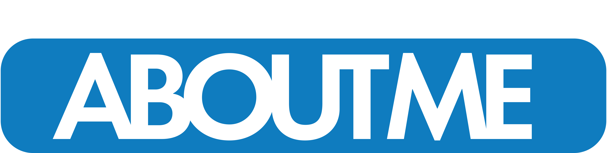
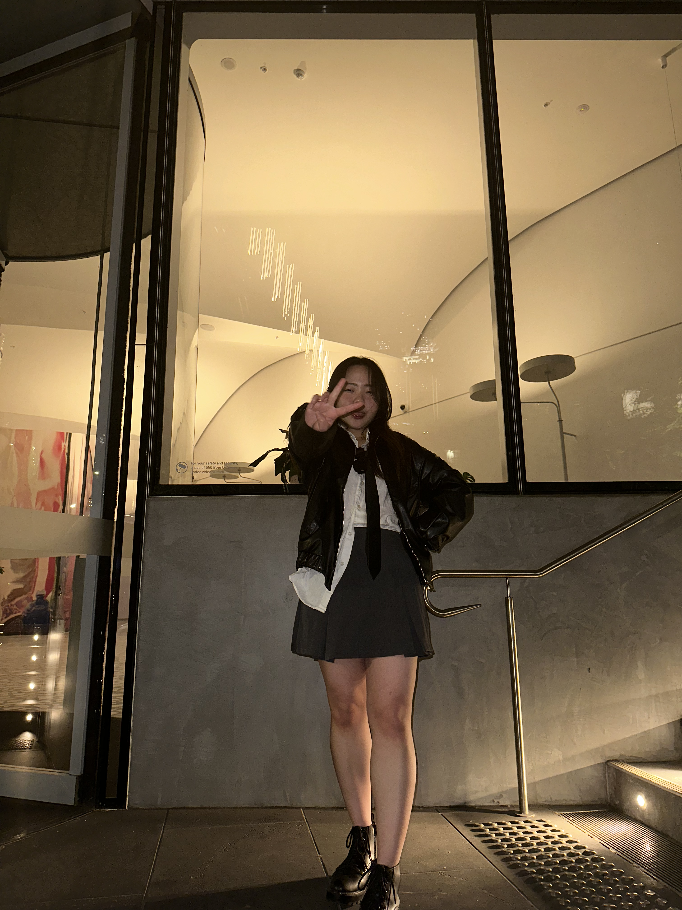

a digital artist specialising in motion graphics, editing, and
graphic design. My work is deeply influenced by emotions and moods,
allowing me to create visuals that convey personal and immersive
storytelling.
With experience as a junior editor on a documentary project, I have
honed my skills in visual composition and dynamic storytelling.
Whether through motion graphics or design, I strive to bring ideas
to life in a way that resonates with audiences.